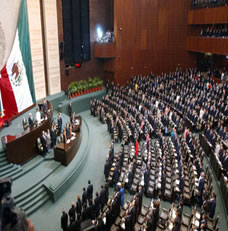

Constituye una totalidad concreta formada por la estructura económica, la superestructura que está constituida por la estructura jurídico-política y la estructura ideológica. En toda formación social debe existir armonía entre la estructura y la superestructura. Una sociedad se presenta como una totalidad integrada, en su forma más simple por su economía, política e ideología. Como vimos anteriormente, la economía o fuerzas productivas y relaciones de producción, constituyen la estructura básica de las naciones y, la política, el Estado, las formas jurídicas y la ideología componen [Capte la atención de los lectores mediante una cita importante extraída del documento o utilice este espacio para resaltar un punto clave. Para colocar el cuadro de texto en cualquier lugar de la página, solo tiene que arrastrarlo.] la superestructura.
Es el conjunto de relaciones que se dan en la producción y las fuerzas productivas (también se le conoce como modo de producción o infraestructura).Cuando hablamos de estructura económica nos referimos a la forma en que se organizan, ordenan y priorizan las actividades.
La estructura económica es el resultado de la acción humana sobre la propia sociedad y sus actividades económicas. Es ésta la que originariamente valora, prioriza y decide la forma y los apoyos que considera deben ser los adecuados para alcanzar los intereses determinados.
Sobre y a consecuencia de las relaciones sociales de la producción (que originan las relaciones de clase), aparecen las instituciones Jurídicas, políticas, morales y religiosas que encierran las concepciones de los hombres sobre la vida del universo y sobre la vida del hombre mismo. En la medida en la que se desarrollen las fuerzas productivas se irá desarrollando la superestructura, ya que la estructura económica y la superestructura estarán estrechamente ligadas.
Organización de una sociedad, bajo un régimen de derecho, estableciéndose la forma y ejercicio del poder de sus representantes. Corresponde a determinadas formas de conciencia social. Sus elementos son:
Reproducir las condiciones de producción es tarea de la ideología dominante a través de los aparatos ideológicos del Estado como la familia, la iglesia, la escuela, el arte, etc. El Estado: organización jurídica producto de la sociedad bajo un poder de denominación, aparece cuando surge la división de la misma sociedad en clases, cuando aparecen explotadores y explotados.
Las funciones del estado son:
Los elementos del estado son: